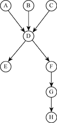

Fan-in and fan-out are the metrics used to measure structural complexity of a node and helps in defining maintainability. Both these measurements can be defined for procedure and files. For example, consider the following g graph with the modules as nodes and the links between them as edges.

Fan-in of a particular module represents the total number of modules dependent on it. Fan-out of a particular module represents the number of modules this module depends on. In the above graph, module-D has a fan-in of 3 links and fan-out of 2 links. When a module has higher fan-in, it represents a better design structure that is that module has been used more number of times, hence it can be a used for re-usability and reduces code redundancy. Fan-out represents coupling among different modules. Higher fan out indicates a module is highly coupled. Maintainability increases with the higher the fan-out.
Henry S., Kafura K. Software structure metrics based on information flow [J]. IEEE Transactions on Software Engineering, 1981, 7(5): 510–518.